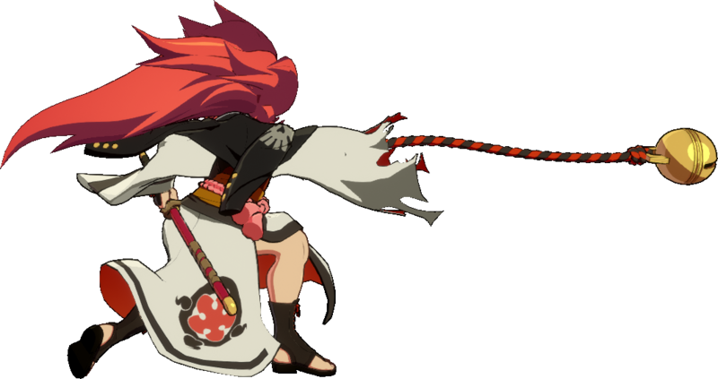
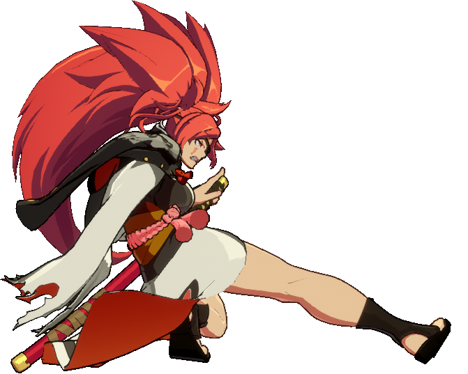

OVERVIEW
Baiken is a versatile, aggressive samurai wielding a deadly blade that allows her to switch seamlessly between
oppressive mid-range pokes and terrifying close-range mix-ups. The Unfaltering Samurai has returned, as formidable as ever.
With her well-balanced kit, Baiken fights effectively at a variety of ranges. She has many strong, mid ranged
pokes, allowing her to bully opponents from afar. Up close, her IAS Youzansen and many frame traps give her
strong mix-ups, and rewarding combos. Tatami Gaeshi is a veritable Swiss army knife of a move, supplying
frame traps, combos, and safe blockstrings enders on the ground; in the air, it provides excellent space control
and easy safe jump setups after most knockdowns.
Thanks to her parry, Hiiragi, Baiken's defense is entirely unique. It has a tight timing window and cannot
deflect projectiles or throws, but comes out on frame 1, allowing Baiken to punish strikes heavily. This technique
also doubles as a Guard Cancel with a unique sound and visual effect.
Said Guard Cancel lacks the damage part, but
allows Baiken to guard crush and dash cancel its recovery, turning the tables of the match at any given moment.
The opponent must alter their timing constantly to lessen this risk - but by the same token, if Baiken becomes
predictable in her parry attempts, she is ripe for punishment.
Baiken has the unique ability to tether herself to her opponent with a rope by landing a ground throw or S Kabari.
Tethered combatants are pulled towards one another constantly, bouncing in if they move away or get knocked away
from their tetheree. This allows Baiken to convert off of her pokes at long range into powerful combos, but if
her foe catches her, she will pay the price.
The true strength of Baiken's sword only shows when the user takes calculated risks. Show courage, fight
purposefully and master balancing risk and reward to make the target of Baiken's ire pay for their wickedness.
TETHER
Baiken's tether mechanic attaches her to the opponent, preventing either character from moving too far away
from the other. This turns all situations with tether applied into very high-risk, high-reward scenarios for
both sides, as the tether will allow for combo extensions that would otherwise be impossible. It also creates a
variety of tricky movement options that can be accessed by trying to dash away from the opponent.
Baiken's tether makes all combos that land during its duration much more damaging, because attacks that would
normally knock the target too far away to be followed up on instead cause them to rocket back in for another hit.
Because this is a threat to Baiken as well, it's important that Baiken works to stay on the offensive whenever
the tether is applied, and that she be familiar with the unique, more damaging combo routes available to her.
The tether also greatly increases the threat of Baiken's pokes. With tether applied, her buttons such as
f.S and 5H are able to chain into Tatami Gaeshi
for a full combo ending in wallbreak or H Kabari knockdown.
For more information on tethered pokes, see Combos.
Tethering does open up another extremely important option for Baiken: it gives her the threat of
crossup Youzansen(j.236S). Most of the time an IAD into
crossup Youzansen will whiff due to momentum and spacing, but with Tether you and your
opponent will be pulled together, creating the threat of Baiken reseting / dropping her pressure / combo early to threaten a mixup.
Tether gives Baiken huge mix and mental stack potential.
Do note that as fantastic as tether is for Baiken, The opponent can make use of it as well if they manage to
escape Baiken's pressure.
Baiken can apply her tether through two methods.
KABARI

S Kabari both applies the tether on block and on hit. However, almost no button
combos into tether, either relying on a counter hit or very specific routing.
For routing see Tether routing in Combos.
On Hit, Baiken is +6 and on block she is +3. This means its still her turn!
For more infos for pressure after S Kabari go to Pressure.
If you succesfully tether your opponent, it's your game! And your game to win! As Baiken now has access to her best mixups,
mental-stack and damage.
Sadly, S Kabari has a very big startup, 29f of startup to be precise, meaning... there is a BIG gap
in your pressure. To make it even worse, it can be easily jumped, and realyibly 6P'd. 😞
Any good Baiken should learn how to succesfully hit / make your opponent block S Kabari.
Either through good conditioning or cheeky resets.
THE GOD OF THROWS
Your throw 4/6D is THE best way to apply tether without a combo.
Why?
Because Baiken's post-throw pressure is GODLY.
Baiken has access to multiple mixups on her throw oki when tether is applied.
She gets a left/right, a high/low, a safejump, a meaty, she can combo from throw... basically, she gets EVERYTHING.
I will go over them in depth in the "Throw Oki" Section in Combos.
For now, all you need to know is that you WANT to throw your opponents.
OFFENSE
hallo
STRIKE / THROW

An important part of Baikens gameplan is her strike / throw mix.
What is strike / throw?
THE GOD OF THROWS
Your throw 4/6D is THE best way to apply tether without a combo.
Why?
Because Baiken's post-throw pressure is GODLY.
Baiken has access to multiple mixups on her throw oki when tether is applied.
She gets a left/right, a high/low, a safejump, a meaty, she can combo from throw... basically, she gets EVERYTHING.
I will go over them in depth in the "Throw Oki" Section in Combos.
For now, all you need to know is that you WANT to throw your opponents.